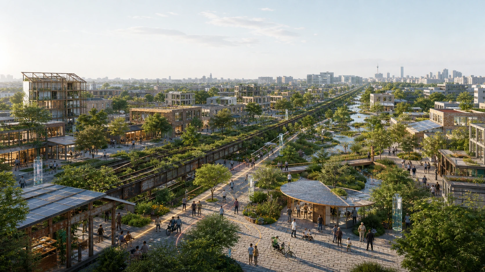
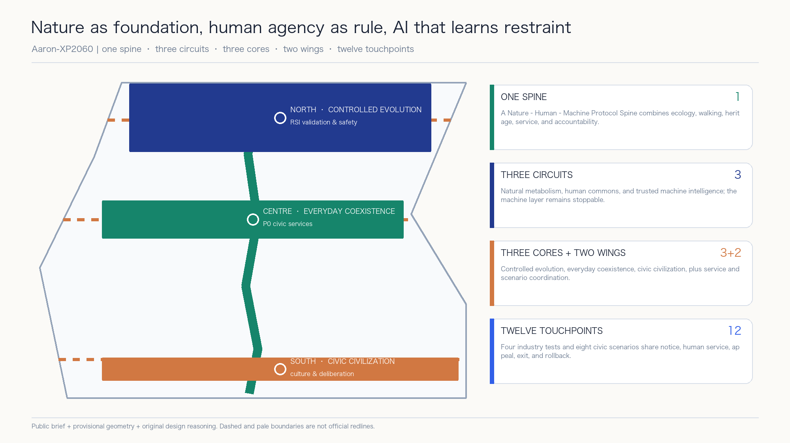
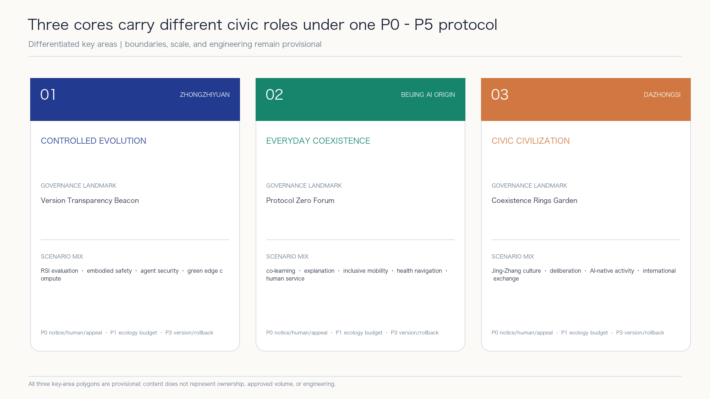
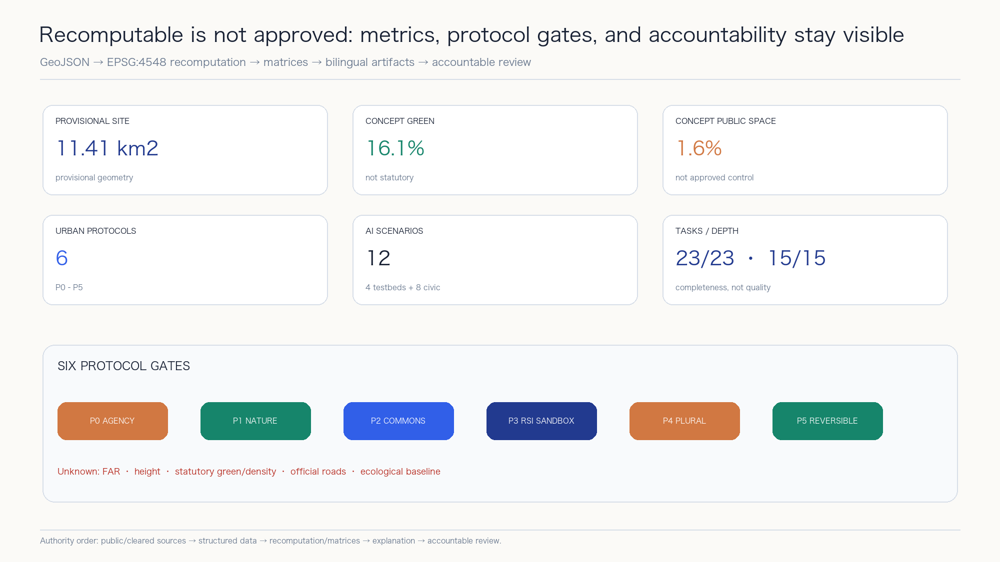

Human Sovereignty
notice, refusal, human service, appeal, stop

A 2060 urban protocol: machines may learn and improve, but may not expand their own authority. Natural budgets, human rights, and rollback gates jointly define the boundary of urban technology.
AI-generated conceptual expression | not a photo, map, redline, or engineering drawing
notice, refusal, human service, appeal, stop
water, energy, carbon, heat, biodiversity budgets
provenance, responsibility, interfaces, audit
version, capability ceiling, red-team, approval, rollback
high-digital, low-digital, and AI-off equivalents
existing assets, modularity, removable pilots

Version Transparency Beacon | four industry tests
Protocol Zero Forum | staffed and AI-off services
Coexistence Rings Garden | culture and deliberation

minimum data · human review · appeal · exit · rollback
minimum data · human review · appeal · exit · rollback
minimum data · human review · appeal · exit · rollback
minimum data · human review · appeal · exit · rollback
minimum data · human review · appeal · exit · rollback
minimum data · human review · appeal · exit · rollback
minimum data · human review · appeal · exit · rollback
minimum data · human review · appeal · exit · rollback
minimum data · human review · appeal · exit · rollback
minimum data · human review · appeal · exit · rollback
minimum data · human review · appeal · exit · rollback
minimum data · human review · appeal · exit · rollback


The task basis uses the public announcement, repository site package, agent taskbook, and local standards snapshots. Fiction, RSI history, NIST, UNESCO, and seven global cases serve only philosophical, historical, governance, or mechanism comparison roles; none replaces site or approval evidence.
Official polygons, statutory controls, ownership, existing buildings, roads, rail, utilities, heritage, ecology, and public-service baselines remain missing. Every spatial proposal is conceptual material for professional teams to deepen.